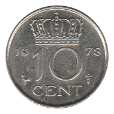
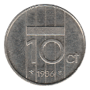

Ten Cent
Willem I (1819-1828)
Willem II / Willem III / Wilhelmina (1848-1906)
Wilhelmina (1910-1945)
1928
1939
1941
1944-P
Fourth Series
1941
1942
1943
Wilhelmina / Juliana (1948-1980)
1948 Mule
1948
1950
1951
1955
1957
1958
1959
1960
 1961
1961
1962
1963
1964
1965
1966
1967
1968
1969 Fish
1970
1971
1972
1973
1974
1975
 1976
1976
1977
 1978
1979
1980
Beatrix (1982-2001)
1983
1984
 1986
1992
1993
1996
1997
1998
2000
Back to the Netherlands
Back to Home